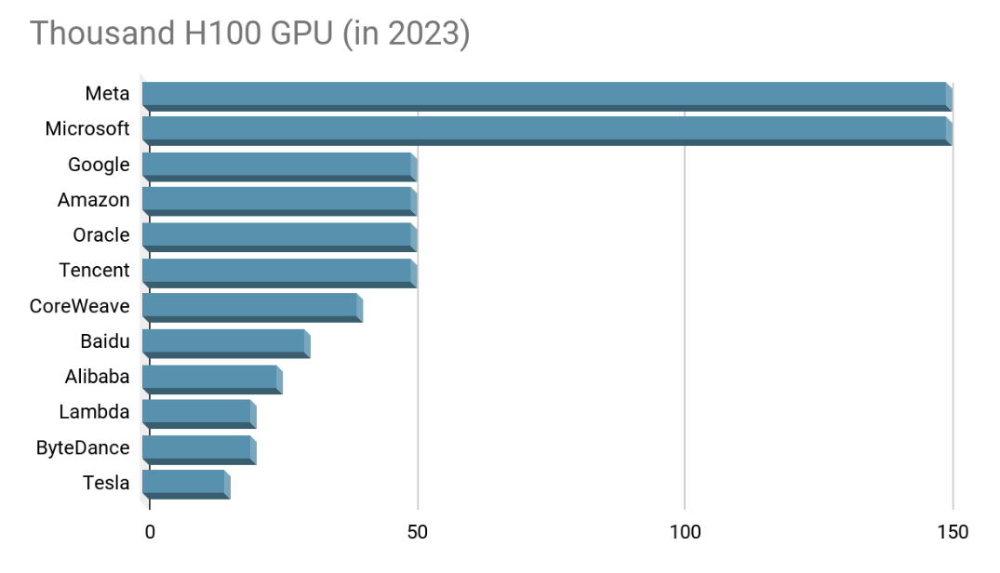
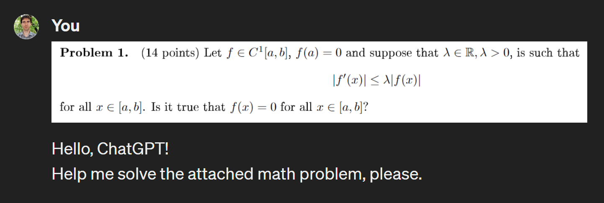

One of the exams had the format “there is a realistic case study,
you need to describe the actions necessary to solve it.”
We had only two samples from the teacher: 2 situations and 2 expected answers to them.
So we added the theory from the slides of all the lectures into the GPT,
followed it with exam samples and asked it to generate similar tasks and answers to them based on the received theory.
Super fast preparation for this kind of exam))
Ηow to study effectively with ChatGPT
Race for AGI

- GPT-4 by OpenAI: one year ago
- Gemini by Google AI: two months ago
- Claude 3 by Anthropic: two months ago
And also LLaMa, Mistral, Grok…

Results are impressive
AlphaGeometry, 17 Jan 2024: An Olympiad-level AI system for [school tasks] geometry
- Solves 25 out of 30 latest IMO geometry problems
- The previous best method only solves 10 problems
- By using existing symbolic engines on a diverse set of random theorem premises, they extracted 100 million synthetic theorems and their proofs, many with more than 200 proof steps, four times longer than the average proof length of olympiad theorems
- Then produced nearly 10 million synthetic proof steps that construct auxiliary points, reaching beyond the scope of pure symbolic deduction

ChatGPT also is quite good in olympiad math
It turns out that now you have a brilliant AI assistant in your pocket!
- it helps guide your thinking
- it can search for relevant information
- it even generates insights
You can focus only on the critical thinking part.
First prompts, for example
You are an expert at C++. How would you recommend a beginner to learn C++? Create a syllabus and lesson plan for me to learn this information effectively.
Also give me a list of bullets with other topics and concepts I should explore to understand C++ more completely and also tell me why.
Student's cases of using AI assistance
The process of completing practical homework with writing code has now changed:
ChatGPT writes basic, often broken, code, which I take as the basis for further execution of the task.
In the further process of execution, Yaroslav uses it as a bug fixer — it is not always easy to understand what the error is. So you can throw the code into it and ask to find and fix the error.
In the further process of execution, Yaroslav uses it as a bug fixer — it is not always easy to understand what the error is. So you can throw the code into it and ask to find and fix the error.
Pros and cons of ChatGPT in studying IT
Useful cases
- helps answer questions for tools with poor or unreadable documentation
(for example, it can tell you how to start using
GDB) - gives good and quick examples for some JSONs, XMLs with the necessary characteristics, or some fixtures to fill in the database
- helps to overcome the fear of a “blank slate”
What it doesn't handle well
- any task where you need to understand deeply the general context of the whole project
- not typical problems in not so popular languages: if you ask to solve a dynamic programming problem in Haskell, it gives funny answers
- for different mathematical facts a lot of the GPT-generated proofs are incorrect
Will AI replace me?
2003, silver medal

2009, master of math

2014, Ph.D.

2016, YDS

2015-2018, analyst

2016-2022, ed manager

2023-..., researcher
GPT-3
GPT-4v
Demo: modern tools for pdf-docs creation
- PyCharm with TeXiFy IDEA plugin — LaTeX, Python and JavaScript in one place with great autocompletion, inverse search from PDF, git etc.
- AI assistant helps with translations in a broad sense: not only between languages, but also any formats, short ideas to nice descriptions, text to speech, auto tests creation, etc.
- GitHub Copilot plugin offers very reasonable pieces of code, draft solutions, and generally helps speed up writing text content
- Grazie Pro plugin corrects typos and polishes long sentences
Few observations from the Academy about studying
- Incredible speeds: any new knowledge is immediately available to everybody
- Yesterday we found out smth on Twitter $\to$ tomorrow added a new skill to ourselves $\to$ in a week all the students have it
- Therefore solving unsolved problems is the key skill
Essential activities for critical thinking development are
Mathematical proofs
Debugging
System engineering
Human discussions
Another four AI-powered cases from teachers
Checking how easily an assignment task
can be answered with the help of LLM
DALL-E 3 draws beautiful high-quality illustrations,
in raster or in vector formats
Send all routine tasks
in a broad sense to the ChatGPT (e.g., writing syllabus draft)
Instead of a conclusion
- Reliable information sources have evolved, but the need for critical thinking and verification remains constant or even more important
- Incredible speeds give us incredible opportunities
- JetBrains has an AI platform for everyone, and this is cool!
- We strive to pioneer in integrating AI in education tools also, shaping a smarter, more efficient learning environment